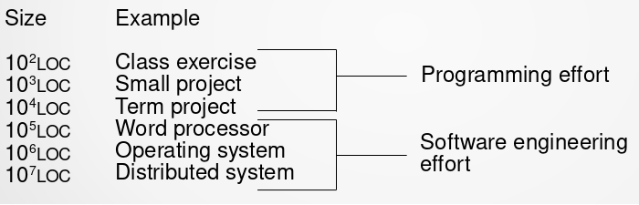

Η Κριση του Λογισμικου και η εξελιξη του

Γιώργος Καρανικόλας - Δημήτρης Τζήκας - Χάρης Ψαρράς
Αλεξάνδρειο ΤΕΙ Θεσσαλονίκης – Πληροφοριακά Συστήματα 1 – 1η Παρουσίαση
Περιεχόμενα
- Τι είναι το λογισμικό;
- Ο όρος “κρίση λογισμικού”
- Η εμφάνιση του όρου “κρίση λογισμικού”
- Γιατί νοιαζόμαστε;
- Standish Group και CHAOS Report
- Υπάρχει όντως κρίση του λογισμικού;
- Οι αιτίες της κρίσης του λογισμικού
- Τρόποι εκδήλωσις κρίσης λογισμικού
Περιεχόμενα
- Ποια είναι η λύση;
- Μέθοδοι
- Προτεραιότητες - Standish Group
- UX - User Experience
Τι είναι το λογισμικό;
Με τον όρο λογισμικό (software) ορίζεται η συλλογή από προγράμματα υπολογιστών, διαδικασίες και οδηγίες χρήσης που εκτελούν ορισμένες εργασίες σε ένα υπολογιστικό σύστημα.
Η Κρίση του Λογισμικού
Με τον όρο “κρίση λογισμικού” αναφερόμαστε στα προβλήματα που σχετίζονται με την ανάπτυξη λογισμικού, τα οποία οδηγούν σε προϊόντα λογισμικού εκτός χρονοδιαγράμματος, εκτός προϋπολογισμού όπου δεν καλύπτουν τις ανάγκες για τις οποίες δημιουργήθηκαν, με αποτέλεσμα να είναι δύσχρηστα και να είναι δύσκολη η επέκταση τους ή η συντήρηση τους.
Η εμφάνιση του όρου “κρίση λογισμικού”
Στο τέλος της δεκαετία του ‘60 αρχίζει να γίνεται αντιληπτό από διάφορους ανθρώπους, πως δεν μπορούν να δημιουργήσουν το λογισμικό που χρειάζονται, με αποτέλεσμα την δημιουργία του όρου “κρίση λογισμικού” από ορισμένους συμμετέχοντες στην πρώτη διάσκεψη του NATO Software Engineering Conference το 1968 στο Garmisch της Γερμανίας.
Ορολογία
- Μεγάλη εταιρία – περισσότερα από 500 χιλιάδες δολάρια ανά έτος
- Μεσαία εταιρία - 200 με 500 χιλιάδες δολάρια ανά έτος
- Μικρή εταιρία - 100 με 200 χιλιάδες δολάρια ανά έτος
Γιατί νοιαζόμαστε;
Στις ΗΠΑ περισσότερα από 250 δισεκατομμύρια δολάρια ξοδεύονται για projects των 175,000 δολαρίων κάθε έτος.
Μέσο κόστος ανά εταιρία:
Μεγάλη εταιρία - $2,322,000
Μεσαία εταιρία - $1,331,000
Μικρή εταιρία - $434,000
Εκτμάται ότι οι Αμερικανικές εταιρείες και κυβερνητικές υπηρεσίες ξοδεύουν:
- 81 δισεκατομμύρια δολάρια για ακυρωμένα projects λογισμικού
- 59 δισεκατομμύρια δολάρια για προγράμματα λογισμικού που υπερβαίνουν τις αρχικές εκτιμήσεις χρόνου τους
Επίσης βρέθηκε πως:
- Ένα εντυπωσιακό 31% των projects ακυρώνονται πρίν ολοκληρωθούν
Στην επιτυχημένη πλευρά του μέσου όρου:
- 16% για projects που είναι μέσα στο χρόνο και το κόστος
- 57% των projects θα κοστίσουν το 189% των αρχικών εκτιμήσεων ο κίνδυνος μπορεί να είναι υψηλότερος για τα νεότερα έργα
Παράδειγμα
- Πόλη του Ντένβερ – απέτυχαν να παράξουν αξιόπιστο λογισμικό για τη διαχείριση των αποσκευών στο νέο αεροδρόμιο του Ντένβερ και κόστισε την πόλη 1 εκατομμύριο δολάρια το μήνα
- Αρχικά προγραμματίστηκε για τις 31 Οκτωβρίου 1993 και έληξε στις 28 Φεβρουαρίου του 1995
Standish Group και CHAOS Report
Standish Group είναι μια ανεξάρτητη διεθνής συμβουλευτική εταιρεία στον τομέα της πληροφορικής που ιδρύθηκε το 1985, γνωστή από τις εκθέσεις τους σχετικά με έργα υλοποίησης συστημάτων πληροφορικής στον δημόσιο και τον ιδιωτικό τομέα. Η εταιρεία επικεντρώνεται σε εφαρμογές λογισμικού κρίσιμης σημασίας, ειδικά με επίκεντρο τις αποτυχίες και τις πιθανές βελτιώσεις στα έργα πληροφορικής.
CHAOS report είναι μια μελέτη που βασίζεται στο Πρόγραμμα CHAOS report της Standish Group σχετικά με τα ποσοστά επιτυχίας των έργων πληροφορικής και τις βέλτιστες πρακτικές διαχείρισης έργων. Η μελέτη αναφέρεται συχνά ως “the de facto authority on success rates of IT projects”. Ξεκίνησε το 1994 και ανέφερε ότι μόνο ένα εκπληκτικά χαμηλό 16,2% των έργων πληροφορικής είναι επιτυχημένο. Τα CHAOS report ταξινομούν τα έργα σε:
-
SuccessfulΤο project ολοκληρώθηκε στην ώρα του και εντός προϋπολογισμού, με όλα τα προσδοκώμενα χαρακτηριστικά και λειτουργίες
-
ChallengedΤο project ολοκληρώθηκε αργά, ξεπέρασε τον προϋπολογισμό και δεν διέπεται από ορισμένα προσδοκώμενα χαρακτηριστικά και λειτουργίες
-
FailedΑκυρώθηκε πριν την ολοκλήρωση του ή παραδόθηκε αλλά έμεινε ανεκμετάλλευτο
Ερωτήματα;;;
- Υπάρχει όντως κρίση του λογισμικού;
- Αντιπροσωπεύει την πραγματικότητα;
Ναι ή Όχι
- Η απάντηση είναι αρκετά περίπλοκη έτσι ώστε να μην μπορούμε να απαντήσουμε με ένα ναι ή με ένα όχι.
- Είναι δύσκολο να βγάλουμε ένα συμπέρασμα καθώς δεν υπάρχει κάποια παρόμοια εταιρία ή μελέτη έτσι ώστε να μπορέσουμε να τις συγκρίνουμε.
- Οπότε το πρόβλημα μένει ανοιχτό.
Συνέντευξη: Jim Johnson
Η συνέντευξη έγινε 25 Αυγούστου το 2006 από τον Deborah Hartmann Preuss
InfoQ: Do you think the CHAOS sample is representative of application development in general?
JJ: Yes
Οι αιτίες της κρίσης του λογισμικού
- Η αντικατάσταση του υλικού από το λογισμικό για την λύση προβλημάτων
- Η χρήση λογισμικού σε όλες τις εταιρίες και η χρήση εξειδικευμένου λογισμικού
- Η χρήση λογισμικού από τον “καθημερινό άνθρωπο”
- Και η εμφάνιση έξυπνων συσκευών.
Οι σημαντικότεροι παράγοντες:
Με αυτόν τον όρο αναφερόμαστε στην προσπάθεια που χρειάζεται για την ανάπτυξη λογισμικού, η οποία έχει αυξηθεί λόγο της αυξημένης πολυπλοκότητας του λογισμικού.
- Αδυναμία κατανόησης του πελάτη
- Δύσχρηστο γραφικό περιβάλλον
- Ακατάλληλοι μέθοδοι
- Φτωχά σχέδια
- Φτωχές διαδικασίες σχεδιασμού
- Φτωχή αρχηγεία
Τρόποι εκδήλωσις κρίσης λογισμικού
- Projects που υπερβαίνουν τον προϋπολογισμό
- Projects εκτός χρονοδιαγράμματος
- Αναποτελεσματικό λογισμικό
- Λογισμικό χαμηλής ποιότητας
- Λογισμικό που συχνά δεν πληρεί τις απαιτήσεις
- Απρόσιτα projects με κώδικας που δύσκολα διατηρείται
- Λογισμικό που δεν παραδόθηκε ποτέ
Ποια είναι η λύση;
- Δεν υπάρχει κάποια συγκεκριμένη λύση
- Υπάρχου μέθοδοι όπου προσπαθούν να αυξήσουν τις πιθανότητες της επιτυχίας του project και Προτεραιότητες
Μέθοδοι
Το Lean είναι μια ετικέτα που εφαρμόζεται σε μια νοοτροπία / φιλοσοφία με γνώμονα την ποιότητα που θα λάβει ο πελάτης. Μια διαδικασία Lean προσπαθεί συνεχώς να βελτιστοποιεί την ποιότητα που θα λάβει ο πελάτης, ελαχιστοποιώντας παράλληλα τα απόβλητα (τα οποία μπορεί να μετρηθούν με βάση το χρόνο, την ποιότητα και το κόστος). Τελικά, το “ταξίδι” Lean είναι η ανάπτυξη ενός εκπαιδευτικού οργανισμού. Παραδείγματα μεθόδων / διαδικασιών Lean περιλαμβάνουν τις Kanban και Scrumban.
Σε ένα πρόγραμμα ανάπτυξης λογισμικού Agile, η ομάδα ακολουθεί μια επαναληπτική διαδικασία που είναι επίσης ελαφριά, εξαιρετικά συνεργατική, αυτο-οργανωτική και επικεντρωμένη στην ποιότητα. Παραδείγματα μεθόδων Agile περιλαμβάνουν το Scrum, XP, και Disciplined Agile Delivery (DAD).
Σε ένα επαναληπτικό πρόγραμμα ανάπτυξης λογισμικού, η ομάδα ακολουθεί μια διαδικασία που οργανώνεται σε περιόδους που συχνά αναφέρονται ως επαναλήψεις ή χρονικά πλαίσια. Σε οποιαδήποτε δεδομένη ημέρα του έργου, τα μέλη της ομάδας μπορεί να συγκεντρώνουν απαιτήσεις, να σχεδιάζουν, να γράφουν κώδικα, να δοκιμάζουν και ούτω καθεξής.
Ένα παράδειγμα μιας επαναληπτικής διαδικασίας είναι η RUP. Τα ευκίνητα έργα, τα οποία ορίζονται ως επαναληπτικά έργα που εκτελούνται με εξαιρετικά συνεργατικό και ελαφρύ τρόπο, αντιμετωπίζονται με καθυστέρηση.
Σε ένα έργο ανάπτυξης λογισμικού ad hoc, η ομάδα δεν ακολουθεί μια καθορισμένη διαδικασία.
Σε ένα παραδοσιακό πρόγραμμα ανάπτυξης λογισμικού, η ομάδα ακολουθεί μια σταδιακή διαδικασία, όπου προσδιορίζονται πρώτα οι απαιτήσεις, τότε ορίζεται η αρχιτεκτονική / σχεδιασμός, στη συνέχεια γίνεται η κωδικοποίηση, κατόπιν δοκιμάζεται και αναπτύσσεται. Οι παραδοσιακές διαδικασίες συχνά αναφέρονται ως "καταρράκτες" ή απλά "σειριακές" διαδικασίες.
Προτεραιότητες - Standish Group
- User Involvement
- Executive Managment Support
- Clear Business Objectives
- Optimizing Scope
- Agile Process
- Project Manager Expertise
- Financial Management
- Skilled Resources
- Formal Methodology
- Standard Tools and Infrastructure
UX - User Experience
Ο σχεδιασμός της εμπειρίας χρήστη (UX, UXD, UED ή XD) είναι η διαδικασία βελτίωσης της ικανοποίησης των χρηστών από ένα προϊόν, βελτιώνοντας τη χρηστικότητα, την προσβασιμότητα και την ευχαρίστηση που παρέχονται στην αλληλεπίδραση με το προϊόν.
Ο σχεδιασμός εμπειρίας χρήστη περιλαμβάνει τον παραδοσιακό σχεδιασμό αλληλεπίδρασης μεταξύ ανθρώπων και ηλεκτρονικών υπολογιστών (HCI), επεκτείνεται με την αντιμετώπιση όλων των πτυχών ενός προϊόντος ή μιας υπηρεσίας όπως γίνεται αντιληπτή από τους χρήστες.
UX και Ελλάδα
- Στην Ελλάδα άρχισε να εμφανίζεται αυτός ο όρος κατά το 2014 και σήμερα υπάρχουν κάποιες εταιρείες / οργανισμοί όπου ασχολούνται με αυτόν τον τομέα.
- Ένας από αυτούς είναι ο theUXProdigy που δημιουργίθηκε από τον Παναγιώτη Ζαχαρία.
Γιατί είναι σημαντικό το UX;
Είναι σημαντικό γιατί καθορίζει την άποψη του χρήστη και αυτό μπορεί να έχει μεγάλη επίπτωση στο προϊόν ή στην εταιρία.

Πηγές
- Essays - Software Crisis
- Informit
- Presentation
Paper: Productivity Impacts of Software Complexity and Developer Experience by Geoffrey K. Gill and Chris F. Kemerer (MIT Sloan School WP #3107-90 Junuary 1990)
- Standish Group και CHAOS Report:
- There is no software engineering crisis by Alex Colburn, Jonathan Hsieh, Matthew Kehrt and Aaron Kimball (January 16, 2008)
- The Standish Report: Does It Really Describe a Software Crisis? By Robert L. Glass
- UX - User Experience: